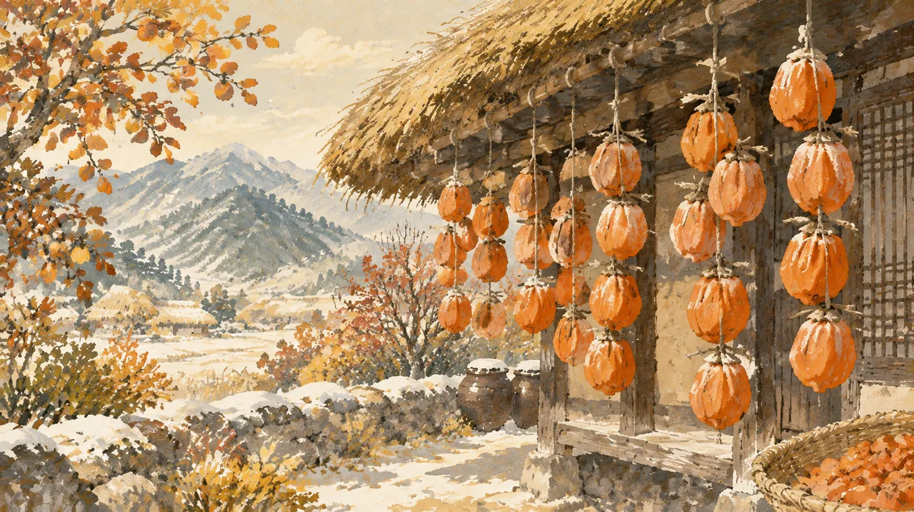

이야기를 들려주는 문장은 해요체예요. 등장인물의 말에는 반말도 나와요.
호랑이는 끝까지 몰랐지만, 곶감은 무서운 녀석이 아니라 감을 말린 간식이에요.
The tiger never found out, but gotgam isn't a scary creature. It's a dried persimmon snack.
가을에 감 껍질을 벗기고 줄에 매달아 말려요. 몇 주 동안 말리면 쫀득해지고 겉에 하얀 가루가 생겨요. 겨울에 먹는 달콤한 간식이에요.
In autumn, people peel persimmons and hang them on strings to dry. After a few weeks they turn chewy, with a white powder on the outside. It's a sweet winter snack.